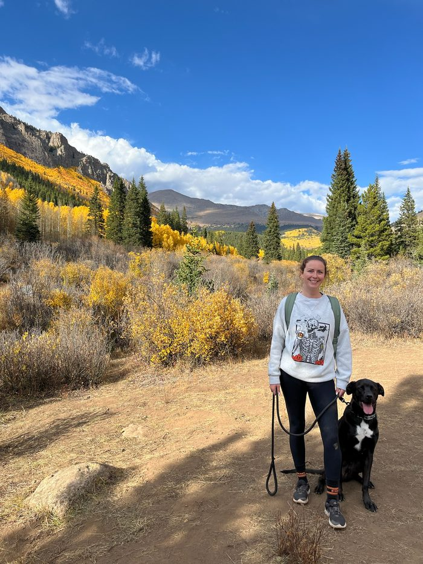

Cognitive Behavioral Therapy (CBT)
Identifying and shifting unhelpful thought patterns to improve mood and behavior.
About
Licensed Social Worker (LSW) · Colorado
I'm a Licensed Social Worker practicing in Westminster, Colorado. I work with adults and couples who feel stuck in patterns they can't quite untangle on their own.
Therapy with me is collaborative, grounded, and focused on helping you understand yourself with more clarity and compassion. My role is to walk alongside you — helping identify patterns, explore what's beneath the surface, and create space for meaningful change.

My therapeutic approach
Depending on your needs and goals, I draw from a range of evidence-based modalities to guide our work together. You don't need to know which one is right for you — that's something we figure out together.
Identifying and shifting unhelpful thought patterns to improve mood and behavior.
Building emotional regulation, distress tolerance, and interpersonal effectiveness skills.
Creating a safe space to process past experiences with compassion and at your own pace.
Strengthening relationships through research-backed tools for communication and connection.
Exploring and rewriting the stories we tell about ourselves to reclaim a sense of agency.
Building on your existing resilience and what already works well in your life.
What to expect
You don't have to perform or have it all figured out. Our work is a conversation, not a test.
Early on, we'll spend time getting to know each other — what's bringing you in, what you're hoping will be different, and what kind of support actually helps. From there we'll notice patterns together, look at what's beneath the surface, and make room for the changes that matter to you. We'll go at a pace that feels right, and we'll check in along the way.
Reaching out can often feel like the hardest step. If you're curious about therapy with me, a free 15-minute consultation is an easy way to see if working together would be a good fit.
Outside the office
"I value spending time outdoors — whether that's a hike, getting fresh air, or simply being present in nature."
I enjoy spending time with my family and friends. I appreciate friendly competition — especially board games — which enrich the skills of patience, humor, and connection that guide my work.
I'm an avid reader who appreciates many different types of books, both fiction and nonfiction. I also value spending time outdoors, and I strive to find moments of mindfulness to balance out the hustle of everyday life.
Let's talk
A free 15-minute consultation is a low-pressure way to find out. Ask anything — there's no commitment.